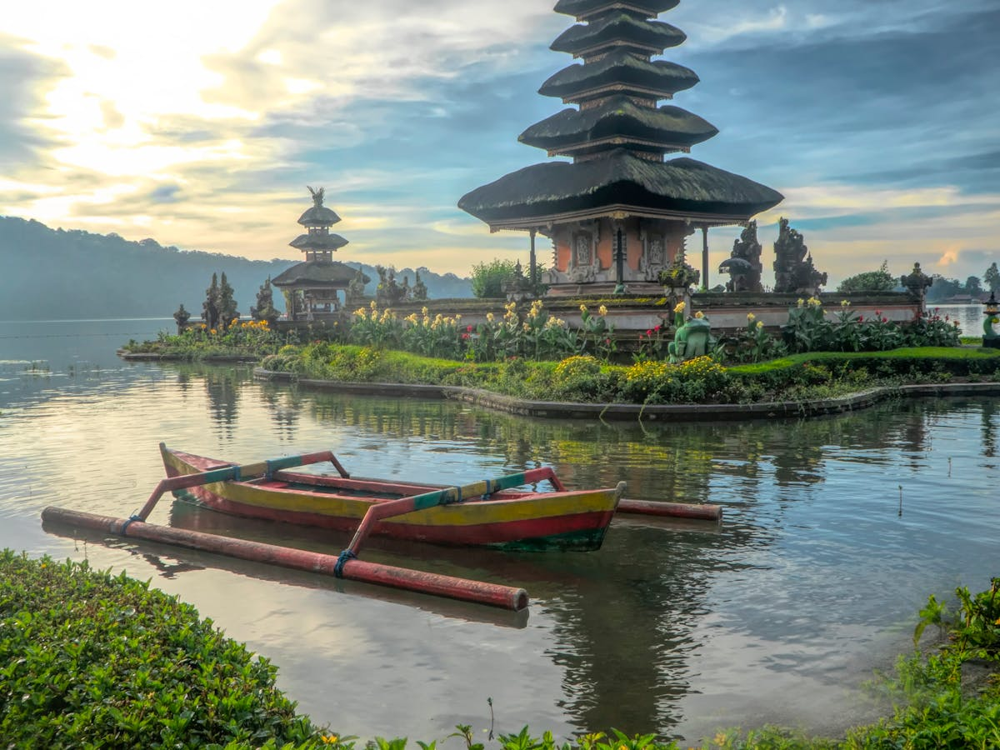

Culture

Inca Trail — In the footsteps of a legendary civilization
Day 1-3: Lima and the Pacific coast
Arrival in Lima, discovery of the UNESCO-listed historic center, the bohemian Miraflores district and renowned Peruvian cuisine.
Day 4-6: Cusco and the Sacred Valley
Flight to Cusco, altitude acclimatization. Exploration of the Sacred Valley: Pisac, Ollantaytambo and the colorful Chinchero market.
Day 7-9: Machu Picchu
Train to Aguas Calientes, discovering Machu Picchu at sunrise. Optional Huayna Picchu hike. Return to Cusco.
Day 10-12: Lake Titicaca
Road to Puno and Lake Titicaca. Visit to the Uros and Taquile islands. Overnight with a local family on an island.
Day 13-14: Return and final discoveries
Return flight to Lima, last free day according to your wishes before the international flight.
Included
- International flights from Paris
- Accommodation in 4* hotels and guesthouses
- Breakfast and 6 meals
- French-speaking specialist guide
- Private transfers and Aguas Calientes train
- Entry to all sites (Machu Picchu included)
- Comprehensive travel insurance
Not included
- Lunches and dinners not mentioned
- Personal expenses
- Tips
- Visa if required
Preparing your trip
Best season: May to September (dry season).
Health: Recommended vaccines: yellow fever, hepatitis A and B. Anti-mosquito treatment recommended for the Amazon.
Altitude: Cusco is at 3,400 m. Allow 2 days for acclimatization.
Formalities: Passport valid 6 months after return. No tourist visa for stays under 90 days.